Lecture 10 — Region Proposal Network (RPN)
Slides © Dr. Khaled M. ElSayed, Zewail City. 67 slides. Faster R-CNN = (Pre-trained CNN backbone) + (RPN) + (RoI pool + classification/regression head).
s10.1 — Architecture review: where the RPN sits inside Faster R-CNN
Why we need the RPN — the Fast R-CNN bottleneck
Why it matters: the RPN is the single new piece that turns slow Fast R-CNN into Faster R-CNN. Knowing exactly which weakness it fixes is a classic exam opener.
Fast R-CNN recap: pass the whole image through a CNN once to get a feature map, run Selective Search on the spatial image to get ~2000 region proposals, project each proposal onto the feature map, then RoI-pool each region to a fixed size before the classifier / box regressor.
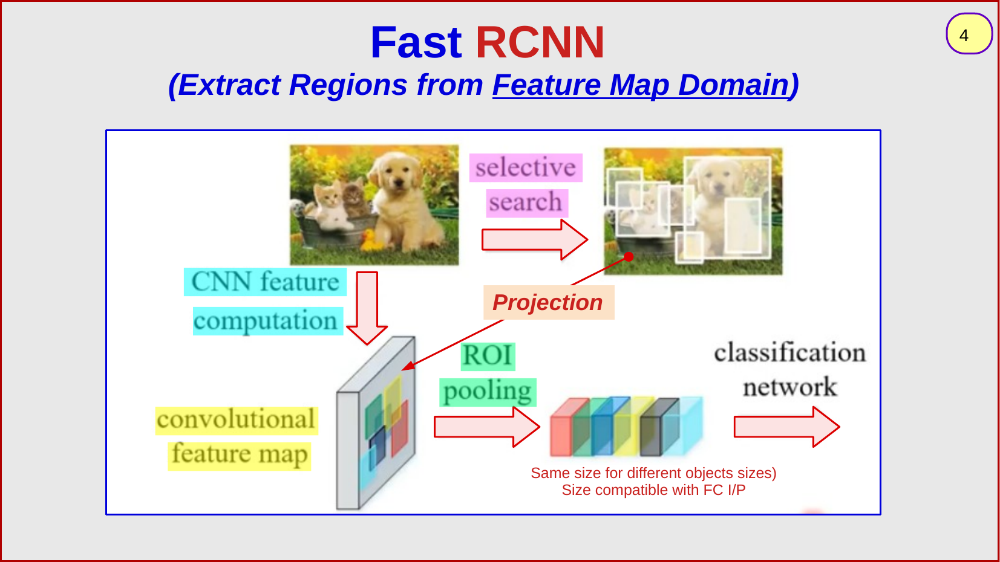
Three problems with Fast R-CNN (slide 5):
- Slow — Selective Search runs on CPU and dominates inference time.
- Too many proposed regions — ~2000 per image.
- Duplicate detections — the same object appears under many overlapping proposals with different boxes.
Solution (slide 5): replace the hand-crafted Selective Search / Edge Boxes with a trained Region Proposal Network, and optimise the number of proposed regions.
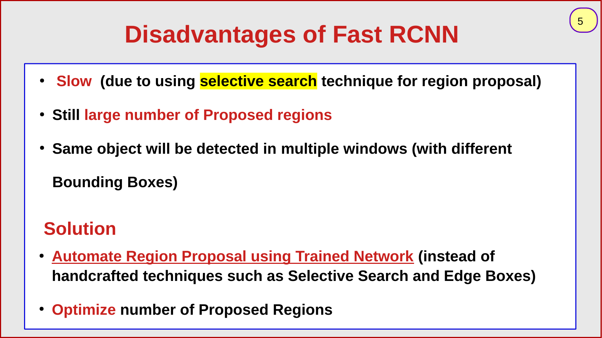
Faster R-CNN at a glance
Why it matters: this is the picture you should be able to redraw in 30 seconds on the exam.
The full pipeline is:
Input image → CNN backbone (e.g. VGG-16) → feature map → RPN → object/no-object scores + box deltas per anchor → proposals → RoI pooling on the same feature map → FC head → (multi-class softmax, refined bounding box).
Key insight: the feature map is computed only once and is shared by the RPN and the downstream detector head. The RPN does not look at the raw pixels — it operates entirely on the backbone's feature map.
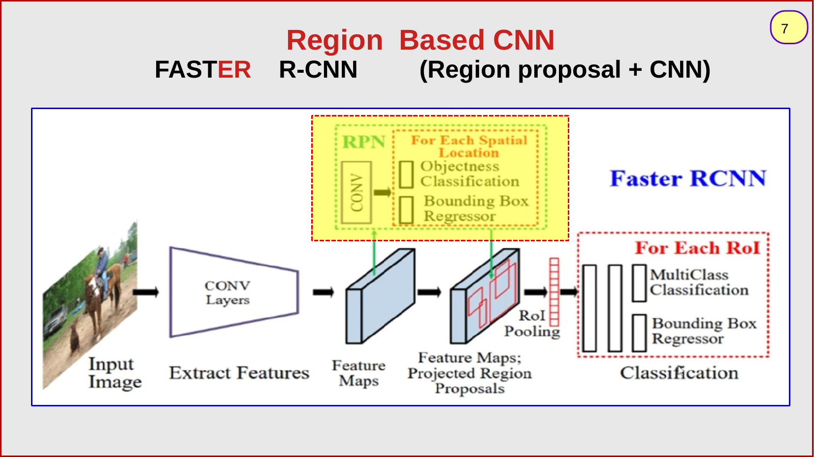
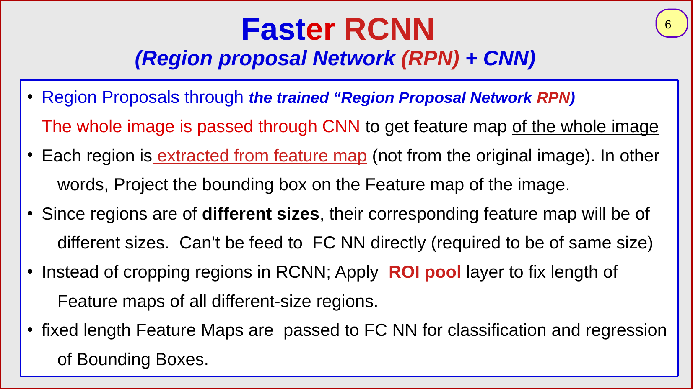
R-CNN vs Fast R-CNN vs Faster R-CNN — the three-line table to memorise
| Model | Region proposals | Where features come from |
|---|---|---|
| R-CNN | Selective Search on image | each region fed through a CNN separately (slow) |
| Fast R-CNN | Selective Search on image | shared feature map; project boxes, RoI-pool |
| Faster R-CNN | RPN on feature map | shared feature map; RPN + detector share it |
Common exam traps
- "RPN looks at the raw image." — False. It looks at the backbone's feature map.
- "Faster R-CNN runs the CNN once per proposal." — False; that is R-CNN. Faster R-CNN computes the feature map once, used by RPN and the head.
- "RPN replaces RoI pooling." — False. RPN replaces Selective Search; RoI pooling stays.
s10.2 — Anchor points & anchor boxes
Anchor points = centres of the feature-map cells
Why it matters: this is the single mental model that unlocks the rest of the lecture. The RPN never tries arbitrary boxes — it uses a fixed grid of anchor points and a fixed library of anchor boxes at each point.
Imagine the input image overlaid by a coarse grid corresponding to the spatial size of the last conv feature map (e.g. for VGG-16 with a 224×224 input, the last conv produces a 7×7×512 map, so the image is split into 7×7=49 cells). The centre of each cell is an "anchor point".
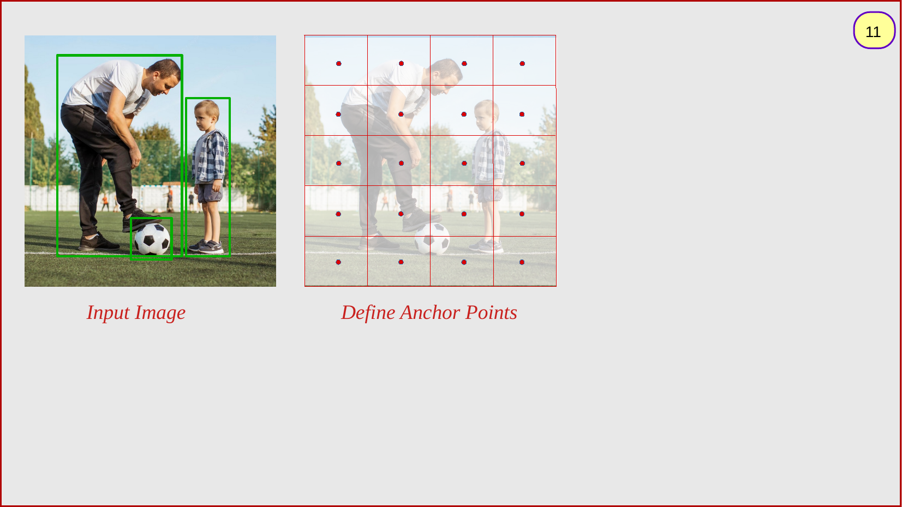
Counting anchor points: if the feature map is $H \times W$, the number of anchor points is exactly $H \times W$. The toy slide example uses a 4×5 grid → 20 anchor points.
Anchor boxes = $k$ predefined boxes per anchor point
Why it matters: a single point can't tell us whether the object is tall, square or wide, or large vs small. We attach a small set of pre-shaped reference boxes ("anchors") to every anchor point so the RPN only has to choose / refine.
At each anchor point we centre $k$ anchor boxes, all sharing the same centre but differing in scale and aspect ratio. In the Faster R-CNN paper:
- 3 scales: 128×128, 256×256, 512×512.
- 3 aspect ratios: 1:1, 2:1, 1:2.
- $\Rightarrow k = 3 \times 3 = \mathbf{9}$ anchor boxes per anchor point.
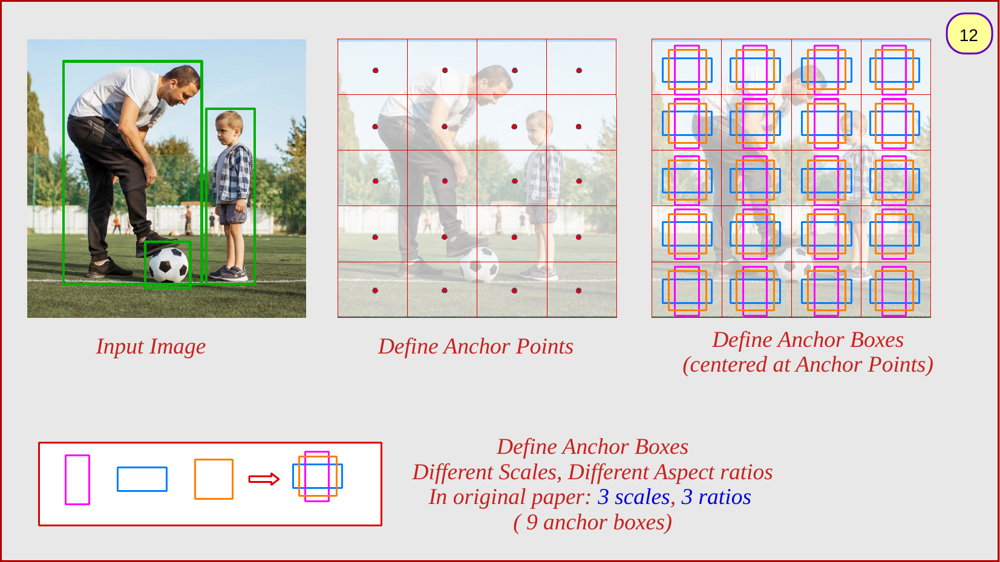
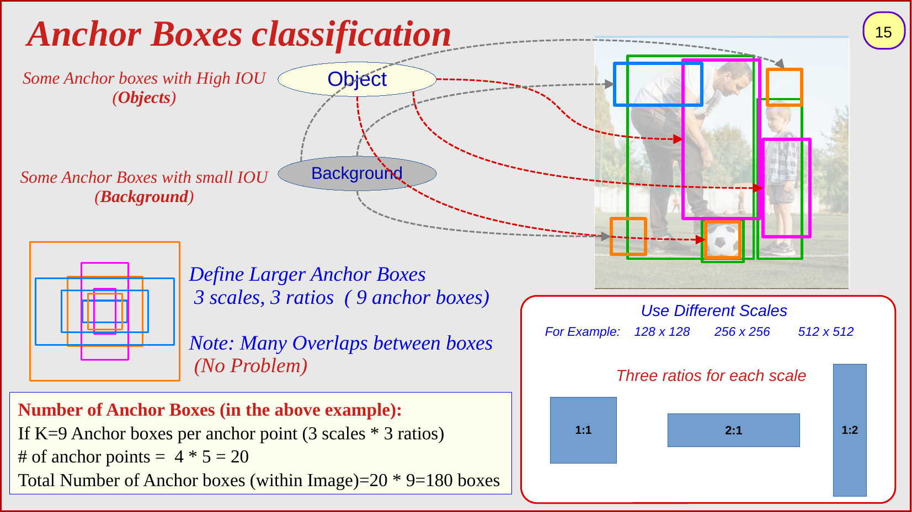
Total number of anchor boxes in an image = $H \times W \times k$.
Worked example 1 — toy slide grid (slide 15)
Feature-map grid 4×5 → 20 anchor points. $k=9$ anchor boxes per point.Total anchor boxes in the image = $4 \cdot 5 \cdot 9 = \mathbf{180}$.
Worked example 2 — Faster R-CNN paper size
For a typical 600×1000 input through VGG-16 the feature map ends up roughly $38 \times 50$. With $k=9$ anchors per point:Total anchor boxes = $38 \cdot 50 \cdot 9 = \mathbf{17{,}100}$ anchors.
→ The RPN's job is to whittle these 17,100 down to a few hundred good proposals.
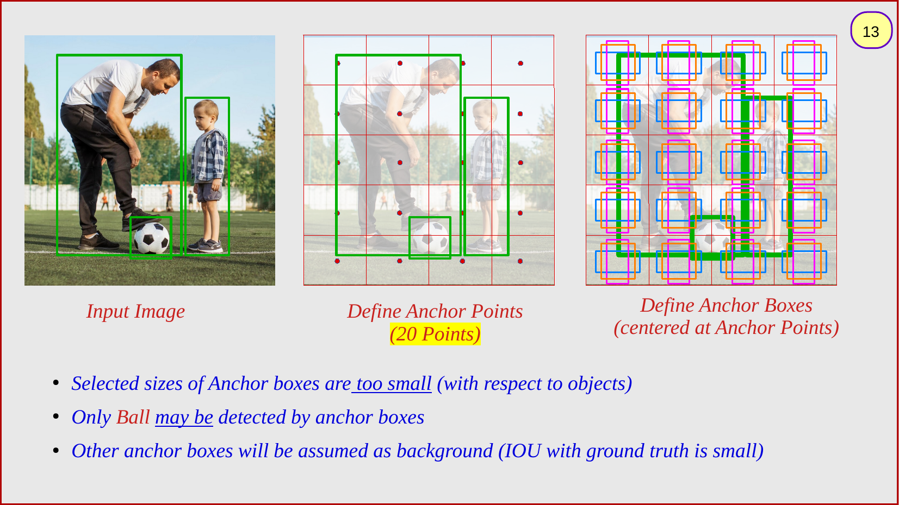
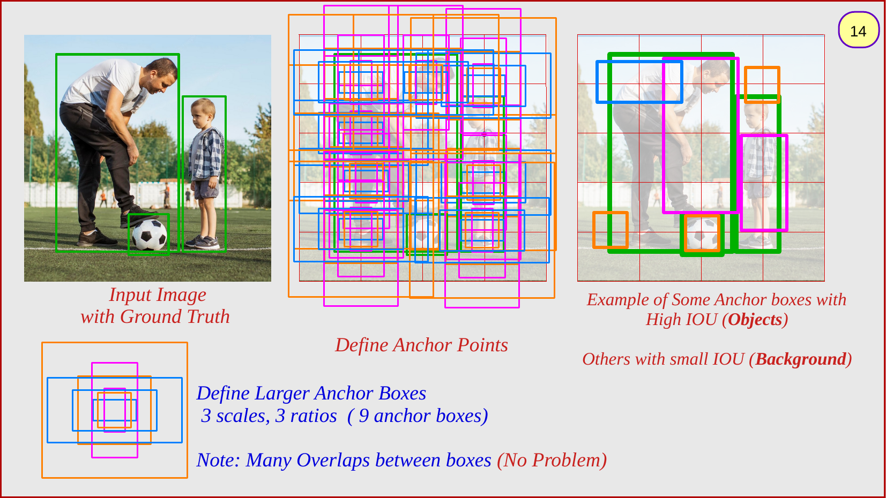
Anchor-box classification: positive, negative, mix
Why it matters: not every anchor box is treated the same during training. Knowing the IoU rules is a guaranteed exam question.
Each anchor box is labelled by its IoU (Intersection over Union) with the ground-truth object boxes:
- Positive (objectness label $p^*=1$, vector $[1,0]$) — either:
- it has the highest IoU with some ground-truth box, OR
- it has IoU $\geq 0.7$ with any ground-truth box (even if not the highest).
- Negative (label $p^*=0$, vector $[0,1]$) — IoU $\leq 0.3$ with every ground-truth box.
- Mix / Undetermined (label vector $[0,0]$) — $0.3 < \text{IoU} < 0.7$ with all ground-truth boxes; not used in the loss.
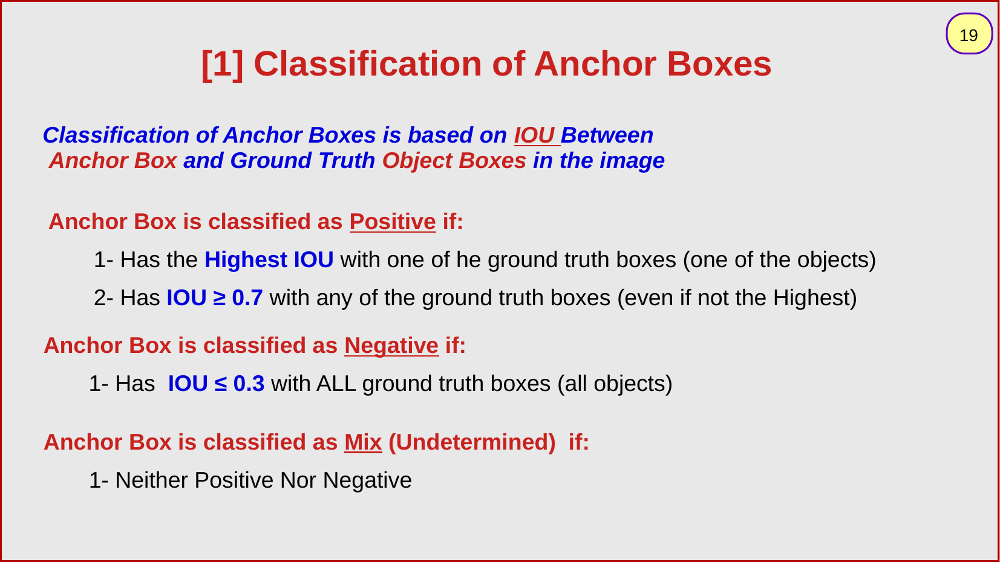
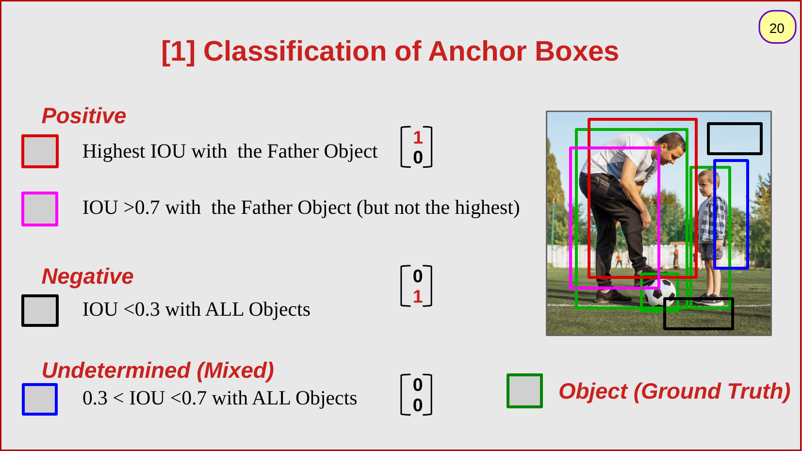
Common exam traps
- "Positive only if IoU ≥ 0.7." — Incomplete. The highest-IoU clause is a separate positive rule.
- "Mix boxes count as negative." — False. They are ignored; their gradient does not flow.
- "The threshold for negative is < 0.7." — False. Negative requires IoU $\leq 0.3$.
Answer
False. $0.3 < 0.5 < 0.7$, so it is in the "mix/undetermined" zone — it is excluded from the loss entirely (unless it happens to be the highest-IoU anchor for some GT, in which case it becomes positive).What we predict per anchor box: the two output vectors
Why it matters: the RPN's two heads exist precisely because each anchor is described by two things.
Each anchor box is characterised by two vectors:
- Content classification (objectness) vector, length 2 — encloses object vs background (mix → ignored).
- Bounding-box offsets vector, length 4 — the displacement and scale change that pull the anchor onto the ground-truth box. Computed only for positive anchors.
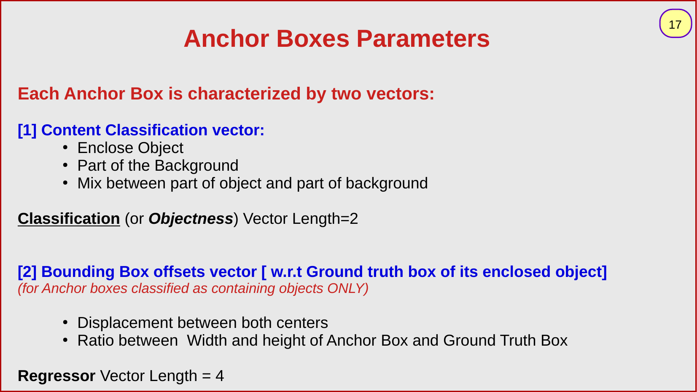
Box-offset parameterisation (the regressor vector)
Why it matters: you will almost certainly be asked to (1) write these four formulas, (2) name every symbol, and (3) explain why the log is used.
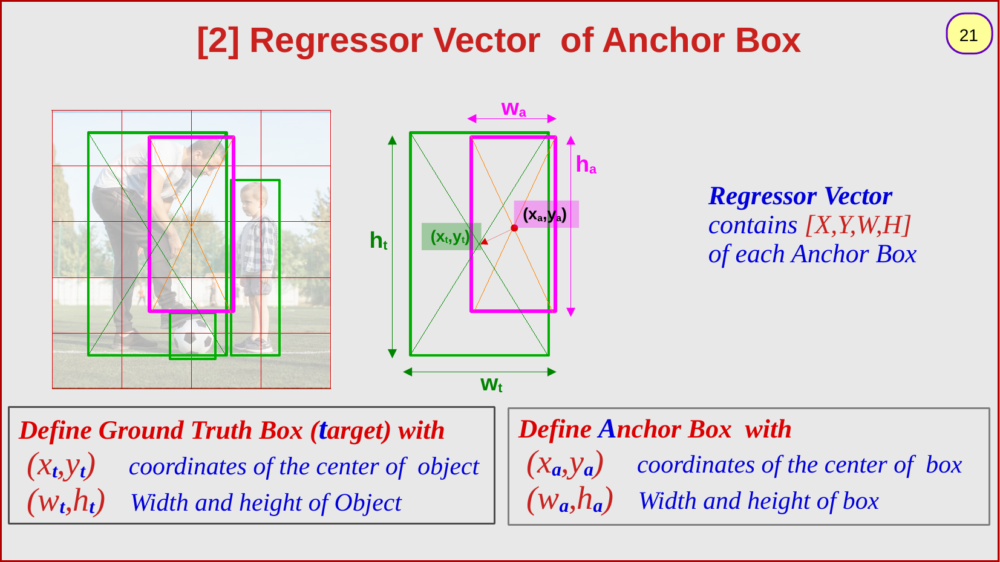
Define the anchor box by its centre $(x_a, y_a)$ and size $(w_a, h_a)$, and the target / ground-truth box by $(x_t, y_t, w_t, h_t)$. The naive deltas would be $(x_t - x_a)$ for the centre shift and $w_t / w_a$ for the size, but those are sensitive to the absolute object size. We normalise:
$$t_x = \frac{x_t - x_a}{w_a}, \qquad t_y = \frac{y_t - y_a}{h_a}, \qquad t_w = \log\!\frac{w_t}{w_a}, \qquad t_h = \log\!\frac{h_t}{h_a}.$$
(In the slides these are written $d_x, d_y, d_w, d_h$; the paper writes them $t_x, t_y, t_w, t_h$ — same thing.)
Symbols:
- $x_a, y_a$ — anchor box centre (known, fixed by the grid).
- $w_a, h_a$ — anchor box width / height (known, fixed by the scale × ratio combo).
- $x_t, y_t, w_t, h_t$ — ground-truth box centre and size (known at training time only).
- $t_x, t_y$ — fractional centre shift, expressed in units of anchor width / height.
- $t_w, t_h$ — log-scale change in width / height.
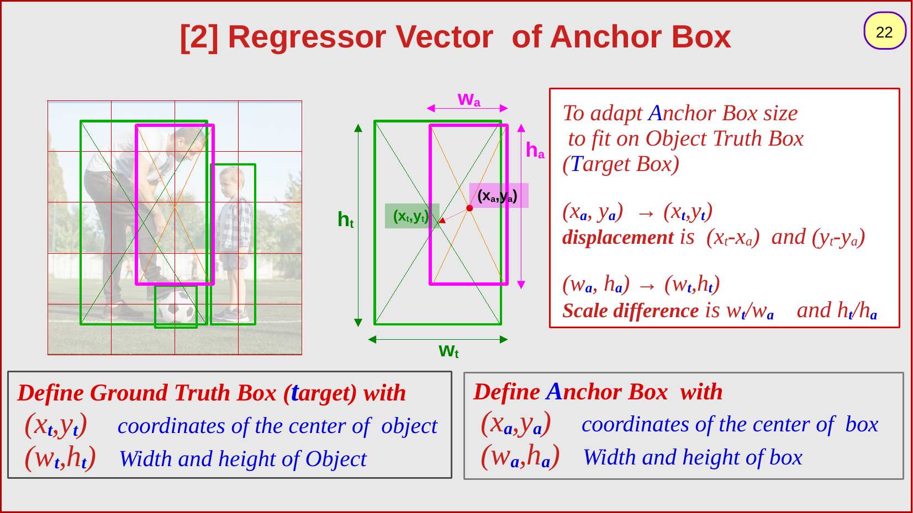
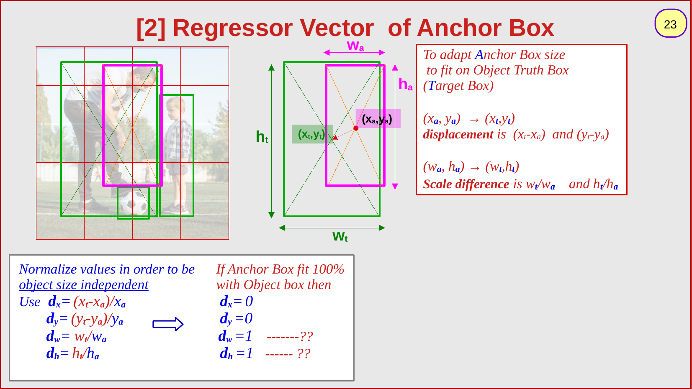
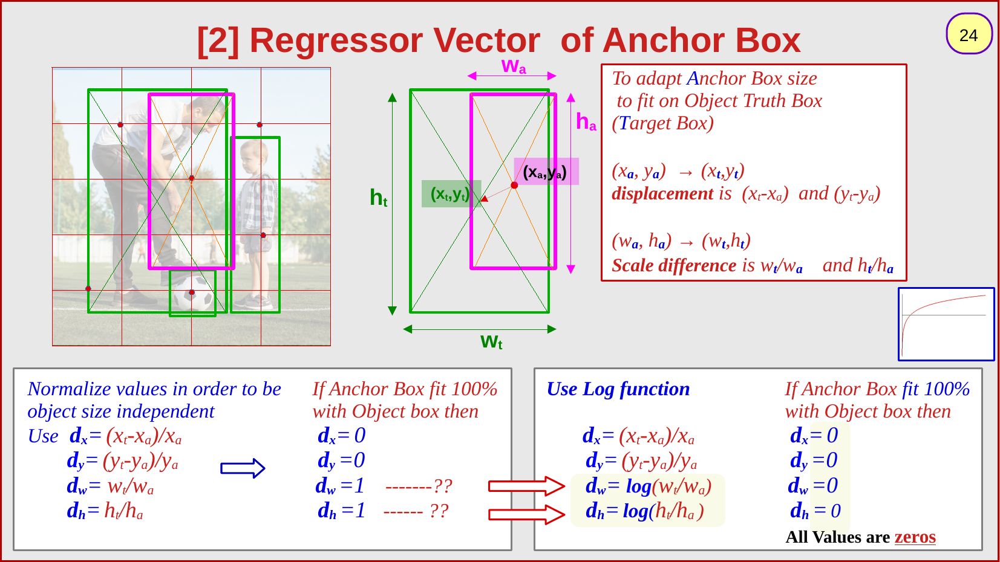
Why the log on width & height? (memorise this answer)
- Width/height are multiplicative quantities: doubling and halving should be symmetric. Plain $w_t/w_a$ ranges asymmetrically in $(0,\infty)$ with neutral value 1; $\log(w_t/w_a)$ ranges symmetrically in $(-\infty,\infty)$ with neutral value 0.
- It puts both location and scale offsets on the same "additive" footing so a single Smooth-L1 loss treats them sensibly.
- A perfect anchor produces the all-zeros vector — the easiest target for any regressor to learn.
- It guarantees the predicted width $w_t = w_a e^{t_w}$ is always positive, no matter what the network outputs.
Worked example — predicted deltas → predicted box
Anchor box: $(x_a,y_a,w_a,h_a) = (100,100,64,64)$.Predicted deltas: $(t_x,t_y,t_w,t_h) = (0.1,\,0.2,\,0.05,\,0.1)$.
Invert the parameterisation:
- $x = x_a + t_x w_a = 100 + 0.1 \cdot 64 = \mathbf{106.4}$
- $y = y_a + t_y h_a = 100 + 0.2 \cdot 64 = \mathbf{112.8}$ (note: 0.2·64=12.8, not 20.8 — careful with the formula)
- $w = w_a\,e^{t_w} = 64 \cdot e^{0.05} \approx 64 \cdot 1.05127 \approx \mathbf{67.3}$
- $h = h_a\,e^{t_h} = 64 \cdot e^{0.10} \approx 64 \cdot 1.10517 \approx \mathbf{70.7}$
Trap
- Mixing up "normalise by anchor width $w_a$" vs "normalise by GT width $w_t$" — the denominator is always the known anchor side.
- Forgetting the $e^{t_w}$ when reading the box back out; using $t_w$ directly gives a nonsense width.
s10.3 — RPN heads (3×3 sliding conv → two parallel 1×1 convs)
Backbone produces a 3-D feature volume
Why it matters: the RPN's input is a tensor, not an image. Knowing its shape ($H \times W \times C$) makes the 1×1 conv counts obvious.
For a 224×224 input, VGG-16 ends with a $7 \times 7 \times 512$ feature map (last conv block):
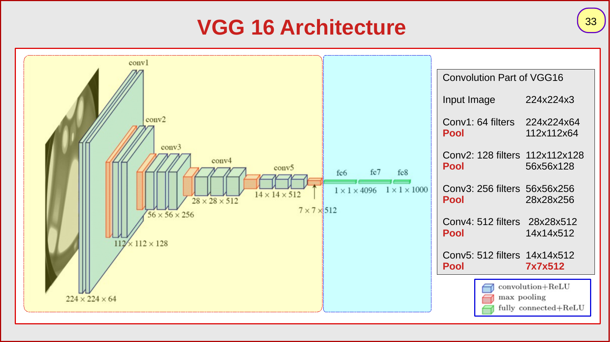
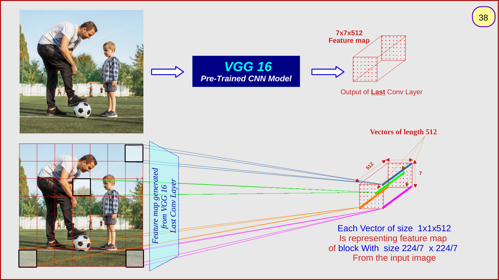
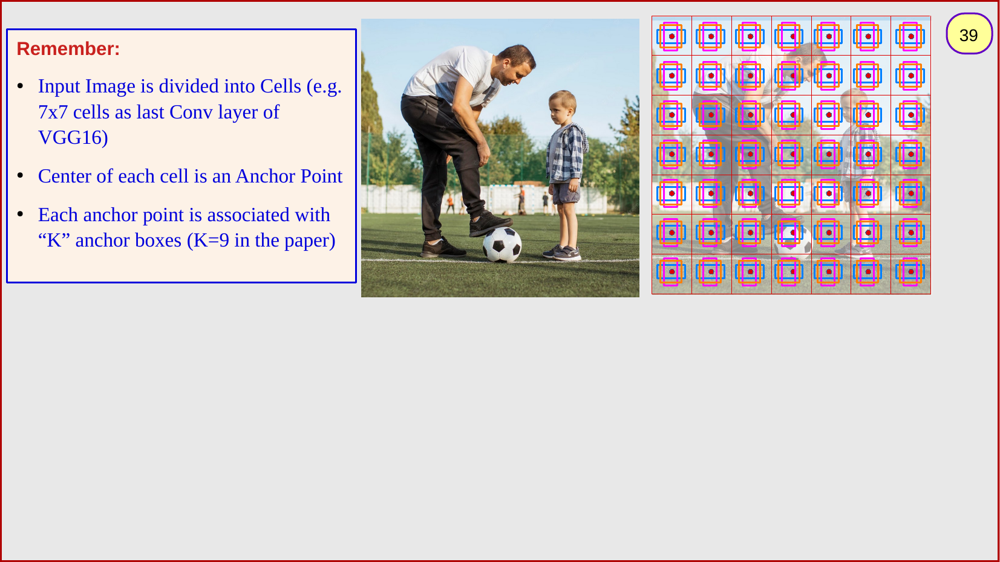
The RPN itself: 3×3 sliding conv → two parallel 1×1 conv heads
Why it matters: this is the architecture diagram you must be able to draw. The genius of the RPN is that it is fully convolutional — no fully-connected layers — so it works on any feature-map size.
Three layers:
- 3×3 conv (intermediate layer): a 3×3 sliding-window convolution applied on the backbone's feature map (with same padding so the spatial shape is preserved). Output shape $H \times W \times C$ (e.g. $7 \times 7 \times 512$). This is the "shared" intermediate representation.
- Classification head: a 1×1 conv with $2k$ output filters → produces, at every spatial position, $2k$ scores = $k$ anchors × 2 (object / no-object). For $k=9$ that is 18 1×1×$C$ filters.
- Regression head: a 1×1 conv with $4k$ output filters → produces, at every spatial position, $4k$ regressed deltas = $k$ anchors × 4 ($t_x, t_y, t_w, t_h$). For $k=9$ that is 36 1×1×$C$ filters.
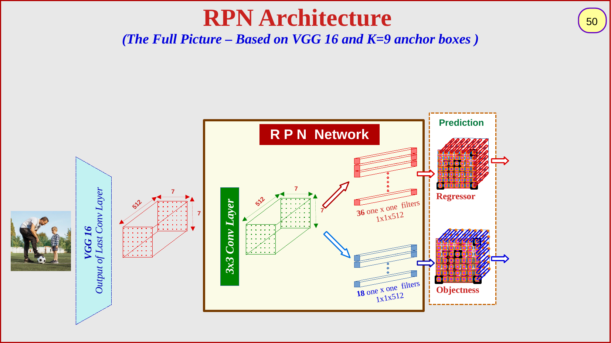
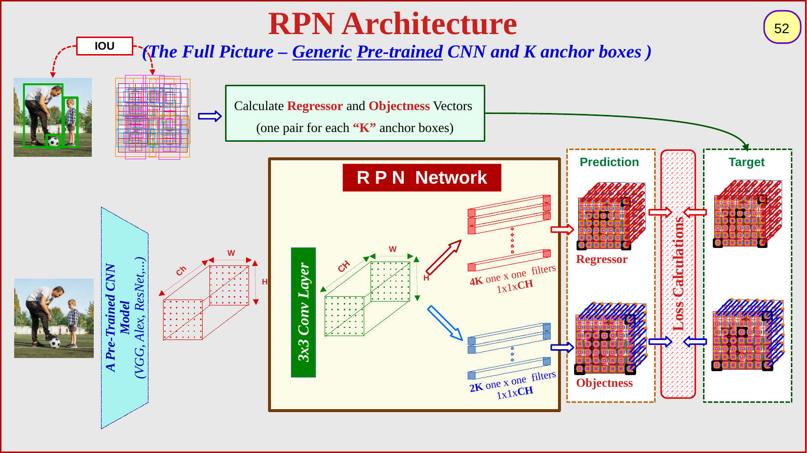
Output tensors:
- Objectness map: $H \times W \times 2k$ (e.g. $7\times 7 \times 18 = 882$ scores for VGG, or $H\!\cdot\!W\!\cdot\!k$ pairs).
- Regressor map: $H \times W \times 4k$ (e.g. $7\times 7 \times 36 = 1764$ regressed values for VGG).
Step-by-step intuition for the 1×1 conv counts (slides 41–48)
Apply one 1×1×512 filter to the $7\times 7\times 512$ feature map → a single $7\times 7$ response map; each value is one number derived from a block of the image.Apply two 1×1 filters → two response maps; the two values at a spatial location describe the same block.
Apply 36 1×1 filters → at every spatial location you now have 36 numbers, exactly the right size to be the 4 box-deltas for each of the 9 anchors centred at that point. That is the regressor head.
Apply 18 1×1 filters → 2 scores per anchor × 9 anchors at every spatial location. That is the classification head.
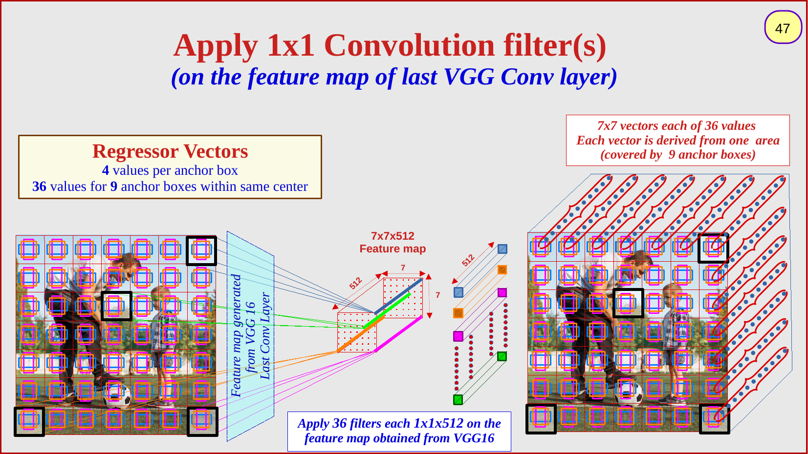
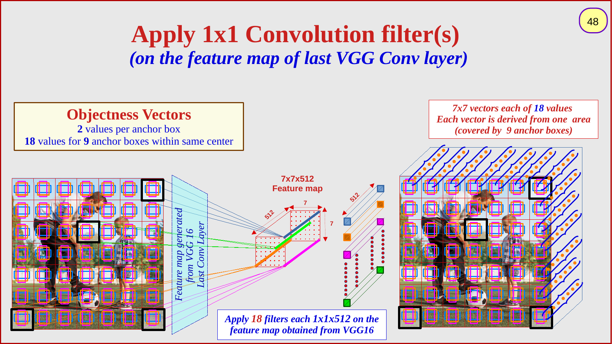
Why 1×1 convs and not FC layers?
- Weight sharing: the same head is applied at every anchor point — translation equivariance comes for free.
- Variable input size: an FC layer would need a fixed input shape; 1×1 convs handle any $H \times W$ feature map.
- Cheap: ~1 filter per (anchor × output dim).
Common exam traps
- "The 3×3 conv is the classifier." — No, the 3×3 conv is a shared intermediate layer. The two parallel 1×1 convs are the actual heads.
- "Classification head has $k$ outputs." — Wrong: it has $2k$ (object + background score for each of the $k$ anchors).
- "Regression head has 4 outputs." — Wrong: it has $4k$ (4 deltas per anchor, $k$ anchors).
Answer
Regressor head output channels: $4k = 36$. Total regressed numbers per image: $H \cdot W \cdot 4k = 38 \cdot 50 \cdot 36 = 68{,}400$.s10.4 — RPN training & multi-task loss
Preparing the training labels (one anchor at a time)
Why it matters: the labels for the RPN are derived from the ground-truth bounding boxes — there is no separate annotation cost.
Steps 1–8 from slides 29–30:
- Take a dataset whose images have annotated object bounding boxes.
- Pass each image through a pre-trained backbone (VGG-16, ResNet, …) to get the feature map.
- For every anchor point, generate the $k$ anchor-box coordinates (3 scales × 3 ratios centred on the anchor point projected to image coords).
- Compute IoU between every anchor box and every ground-truth box.
- Label each anchor as object $[1,0]$, background $[0,1]$, or mix $[0,0]$ (the objectness vector — length $2$, so length $2k$ for all anchors at one point).
- For positive anchors only, compute the 4-D regressor target $(d_x, d_y, d_w, d_h)$ using the parameterisation above — length $4$ per anchor, so $4k$ at one point.
- For mix & negative anchors, fill the regressor target with zeros (they are masked out in the loss anyway).
- Feed the RPN with the feature map (input) and the (objectness, regressor) tensors as labels.
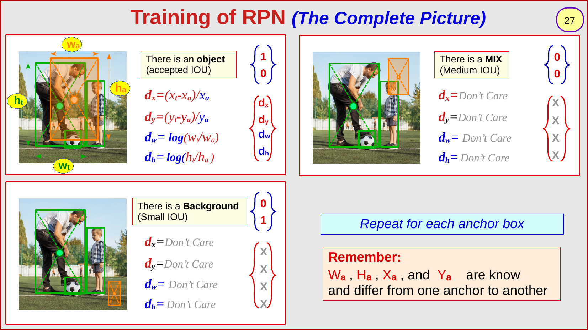
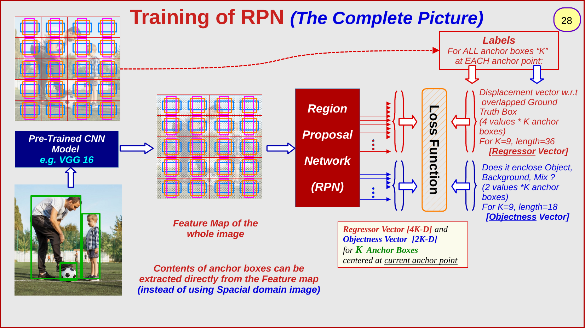
The classification loss (binary cross-entropy)
Why it matters: object-vs-background is a 2-class problem; cross-entropy is the natural fit.
For one anchor:
$$L_{cls}(p^L, p^P) = -\, p^L \log p^P.$$
where $p^L$ is the one-hot label vector (length 2) and $p^P$ is the predicted probability vector (length 2). Averaged over $N_{cls}$ sampled anchors:
$$\text{Classification Loss} = \frac{1}{N_{cls}} \sum_{i=1}^{N_{cls}} L_{cls}(p^L_i, p^P_i).$$
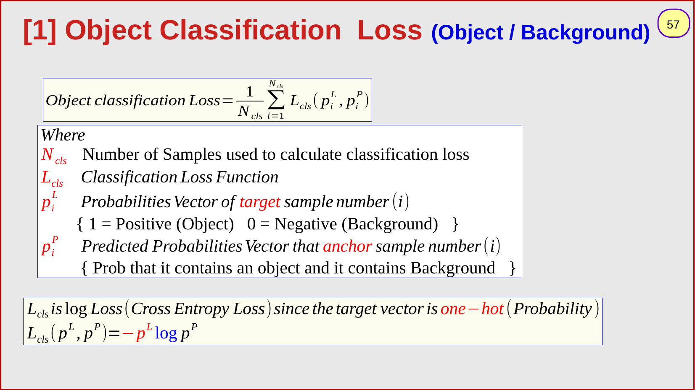
The box-regression loss (Smooth-L1)
Why it matters: this is the second half of the multi-task loss and the place where the "regression only for positives" trick is encoded mathematically.
For one anchor with ground-truth offsets $d^L = (d_x^L, d_y^L, d_w^L, d_h^L)$ and predicted offsets $d^P = (d_x^P, d_y^P, d_w^P, d_h^P)$:
$$L_{reg}(d^L, d^P) = L_1\!\big(d_x^P - d_x^L\big) + L_1\!\big(d_y^P - d_y^L\big) + L_1\!\big(d_w^P - d_w^L\big) + L_1\!\big(d_h^P - d_h^L\big),$$
where $L_1$ is the Smooth-L1 (Huber) function:
$$L_1(x) = \begin{cases} 0.5\,x^2 & \text{if } |x| < 1 \\ |x| - 0.5 & \text{otherwise} \end{cases}$$
and the box-regression loss is averaged over $N_{reg}$ anchors, weighted by the ground-truth label so only positives contribute:
$$\text{Box Regressor Loss} = \frac{1}{N_{reg}} \sum_{i=1}^{N} p_i^* \, L_{reg}(d_i^L, d_i^P).$$
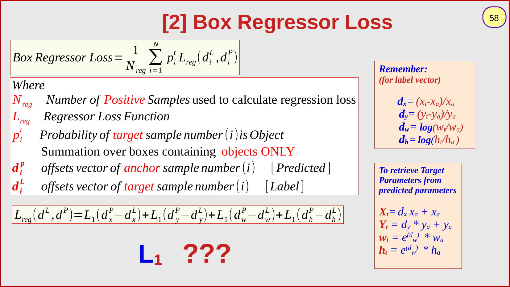
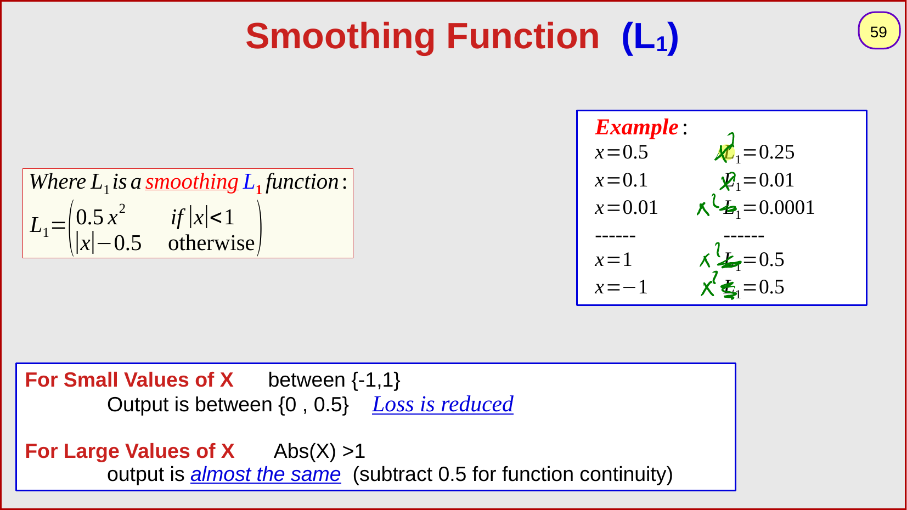
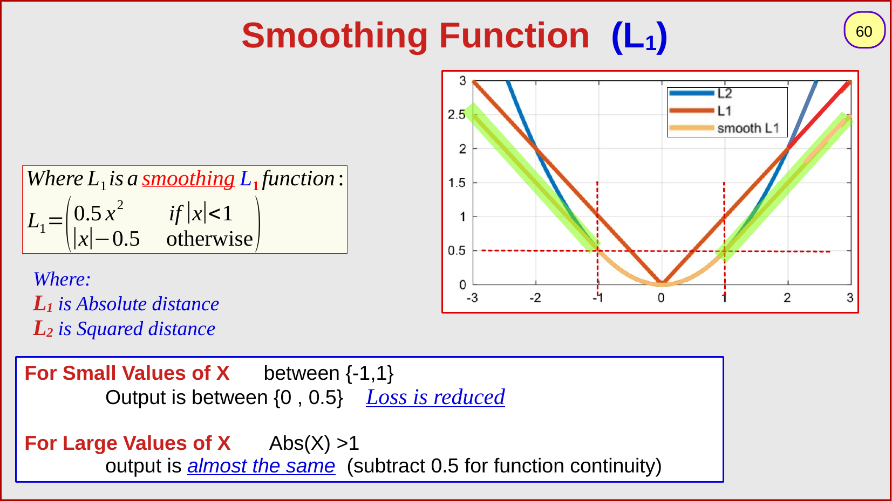
Why Smooth-L1 instead of plain $L_2$ or $L_1$?
- $L_2$ ($x^2$): grows quadratically → outlier deltas (e.g. a wildly wrong anchor at the start of training) produce huge gradients and destabilise training.
- $L_1$ ($|x|$): robust to outliers but has a kink at $x=0$ → no continuous gradient at the optimum.
- Smooth-L1: quadratic for $|x|<1$ (smooth at zero) and linear for $|x|\geq 1$ (bounded gradient on outliers). The $-0.5$ in the linear branch ensures continuity at $|x|=1$.
Total RPN loss (the multi-task objective)
Why it matters: this is the equation you must be able to write from memory, with every symbol named.
$$\boxed{\; L(\{p_i\}, \{t_i\}) \;=\; \frac{1}{N_{cls}}\sum_i L_{cls}(p_i, p_i^*) \;+\; \lambda\,\frac{1}{N_{reg}}\sum_i p_i^* \, L_{reg}(t_i, t_i^*) \;}$$
Symbols:
- $i$ — index over anchors in a mini-batch.
- $p_i$ — predicted probability that anchor $i$ contains an object (output of the classification head).
- $p_i^* \in \{0, 1\}$ — ground-truth binary label: 1 for positive anchor, 0 for negative; the mix anchors are not in the sum at all.
- $t_i$ — predicted 4-D regressor vector $(t_x, t_y, t_w, t_h)$ for anchor $i$.
- $t_i^*$ — ground-truth 4-D regressor vector for anchor $i$.
- $L_{cls}$ — log/binary cross-entropy loss.
- $L_{reg}$ — Smooth-L1 loss summed over the 4 components.
- $N_{cls}$ — number of anchors used in the classification term (mini-batch size, e.g. 256).
- $N_{reg}$ — normalising count for the regression term (≈ number of anchor locations).
- $\lambda$ — balancing weight between the two tasks (paper uses $\lambda = 10$ so the two terms have comparable magnitude after normalisation).
Why does $p_i^*$ multiply $L_{reg}$? Because regression targets only exist for positive anchors. A negative anchor's ground-truth box is "no object" — there is no box to regress to. Multiplying by $p_i^*$ (which is 0 for negatives) cancels the regression term for any non-positive anchor. This is also why for negative/mix anchors we fill the regressor label with zeros: the loss multiplies them away regardless.
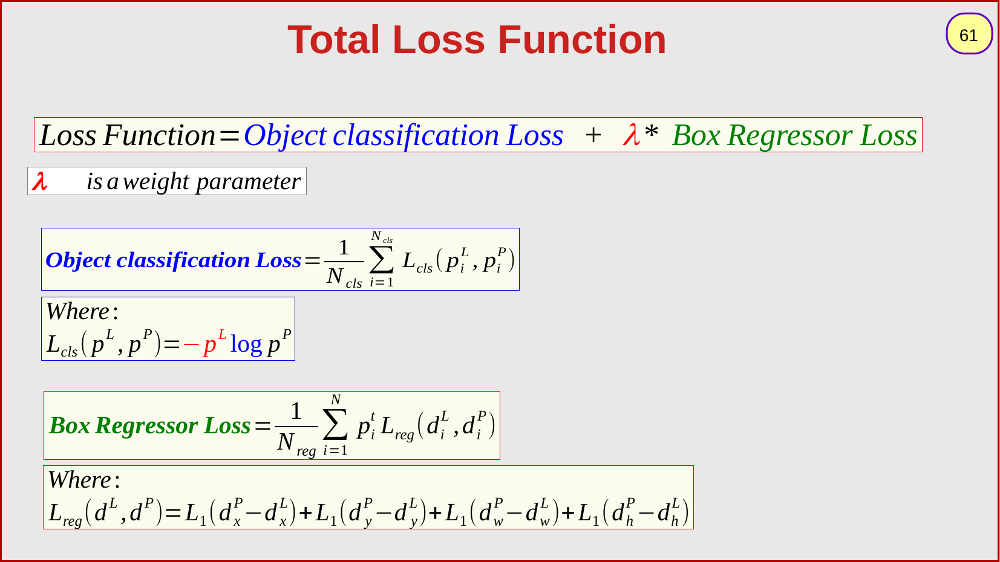
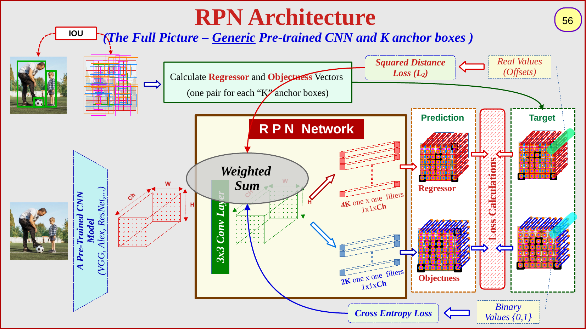
Mini-batch sampling — only 256 anchors per image
Why it matters: an image contains thousands of anchors but the vast majority are negative. Naively averaging would drown the loss in background examples.
Per image the RPN samples a mini-batch of 256 anchors: 128 positives + 128 negatives. If there are fewer than 128 positives in the image, the rest of the budget is filled with negatives (the mini-batch is always 256 total).
This 1:1 positive/negative balance prevents class imbalance from dominating $L_{cls}$. The whole image is trained in one shot — the RPN is fully convolutional and the entire feature map is processed at once.
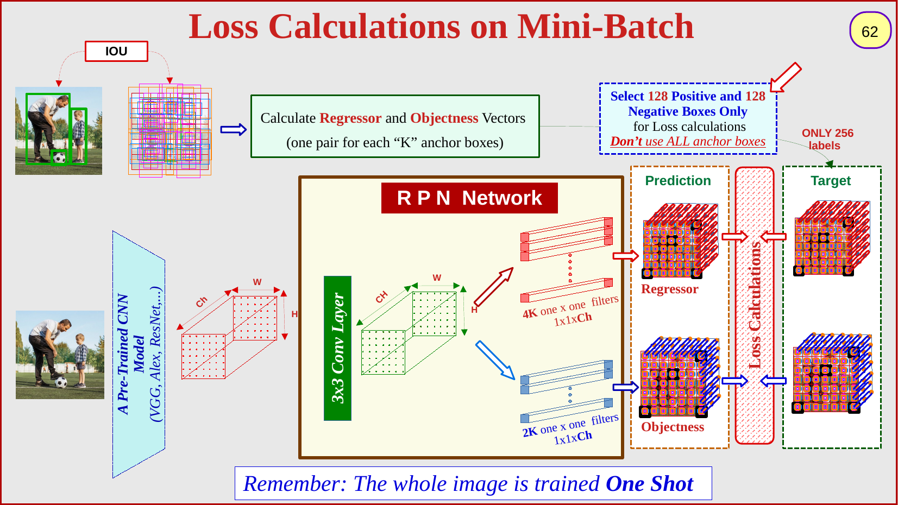
From RPN outputs to final region proposals — Non-Max Suppression
Why it matters: the RPN produces thousands of object-like boxes that overlap heavily. NMS filters them down to a clean set of proposals to feed the downstream detector.
Step A — read out a box per anchor using the inverse parameterisation:
$$X_t = d_x w_a + x_a,\qquad Y_t = d_y h_a + y_a,\qquad W_t = e^{d_w} w_a,\qquad H_t = e^{d_h} h_a.$$
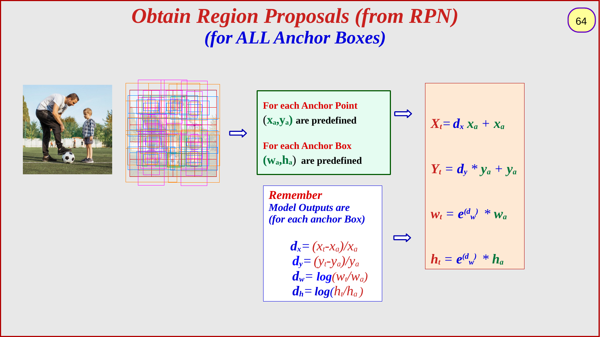
Step B — attach the objectness scores $(P_{obj}, P_{bg})$ from the classification head to every proposed box:
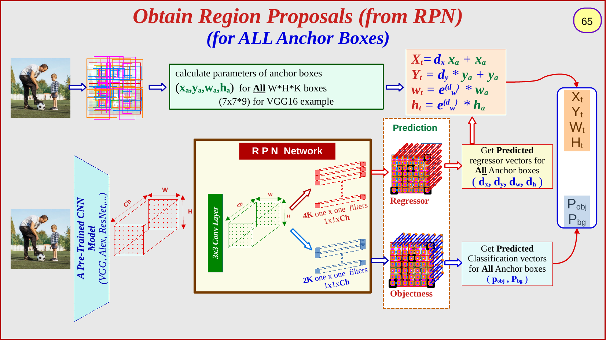
Step C — Non-Max Suppression: sort all proposed boxes by $P_{obj}$, then repeatedly keep the highest-scoring box and remove every box that overlaps it by more than a threshold. Output: a much smaller set of high-quality region proposals.
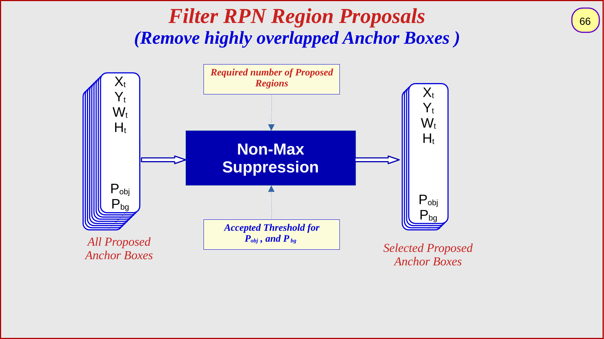
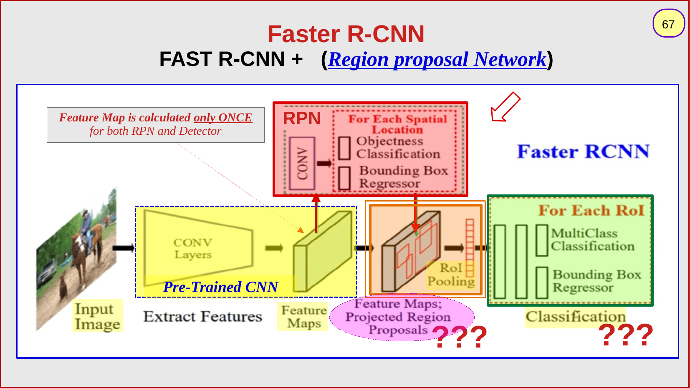
Common exam traps
- "NMS is part of the RPN architecture / loss." — False. NMS is a deterministic post-processing step at inference; it has no learnable parameters.
- "All anchor boxes become proposals." — False. Thousands of anchors are pruned by objectness threshold + NMS down to a few hundred.
- "The feature map is recomputed for each proposal." — False; that was R-CNN. In Faster R-CNN, the feature map is computed once and shared by RPN and the head.